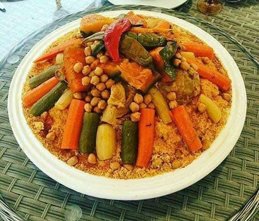

Moroccan Couscous with Seven Vegetables
An authentic recipe for Moroccan Couscous with Seven Vegetables, the ultimate comfort food to enjoy with family and friends. Lamb, beef, or chicken is stewed with assorted veggies,
Ingredients:
- 2 tablespoons olive oil
- 1 large onion chopped (200gr)
- 00 gr braising beef or lamb (off the bone), trimmed of excess fat. (i.e. lamb shoulder, cracked lamb shank, lamb or beef neck, beef shin). If your meat is on the bone, take into account the weight of the bone and make sure you get about 125 gr of meat per person.
- 250 gr canned chickpeas (or 125 gr dried chickpeas soaked in cold water overnight), drained.
- 2 teaspoons salt
- 1 teaspoon ground ginger
- 2 tomatoes, seeded and chopped in 2 cm large pieces
- 1 large sweet potato (250 gr), peeled and cut into large chunks
- 300 gr turnip, peeled and cut into 3 cm lengths
- 3 carrots (300 gr), scraped and cut into 4 cm lengths
- 300 gr butternut squash or pumpkin, seeded if necessary and cut into large chunks
Steps:
- in a large casserole (minimum 5 litres capacity), heat the olive oil over medium heat and add in the onions, the meat, the spices, salt, pepper and the tomato pieces. Turn the meat occasionally until lightly browned, about 10 min.
- Add 1.5 litres of water and the chickpeas. Bring to the boil, reduce to medium low heat and place the coriander bouquet in the casserole. Cover with a lid and let gently simmer for 50 min.
- repare the vegetables and set aside.
- Now is a good time to start preparing the raisins and the couscous.
- Carefully discard the coriander bouquet and place the cabbage,
- Add the potatoes to the broth and cover the casserole for another 20 minutes.
Note: • You can keep the couscous grains, the broth, the meat, the vegetables and the raisins for up to 3 days in the fridge.
Return to top